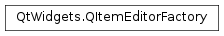

QItemEditorFactory¶
Synopsis¶
Functions¶
- def
registerEditor(userType, creator)
Virtual functions¶
- def
createEditor(userType, parent) - def
valuePropertyName(userType)
Static functions¶
- def
defaultFactory() - def
setDefaultFactory(factory)
Detailed Description¶
The
PySide2.QtWidgets.QItemEditorFactoryclass provides widgets for editing item data in views and delegates.When editing data in an item view, editors are created and displayed by a delegate.
PySide2.QtWidgets.QItemDelegate, which is the delegate by default installed on Qt’s item views, uses aPySide2.QtWidgets.QItemEditorFactoryto create editors for it. A default unique instance provided byPySide2.QtWidgets.QItemEditorFactoryis used by all item delegates. If you set a new default factory withPySide2.QtWidgets.QItemEditorFactory.setDefaultFactory(), the new factory will be used by existing and new delegates.A factory keeps a collection of
PySide2.QtWidgets.QItemEditorCreatorBaseinstances, which are specialized editors that produce editors for one particularPySide2.QtCore.QVariantdata type (All Qt models store their data inPySide2.QtCore.QVariants).
Standard Editing Widgets¶
The standard factory implementation provides editors for a variety of data types. These are created whenever a delegate needs to provide an editor for data supplied by a model. The following table shows the relationship between types and the standard editors provided.
Type Editor Widget bool PySide2.QtWidgets.QComboBoxdouble PySide2.QtWidgets.QDoubleSpinBoxint PySide2.QtWidgets.QSpinBoxunsigned int PySide2.QtCore.QDatePySide2.QtWidgets.QDateEditPySide2.QtCore.QDateTimePySide2.QtWidgets.QDateTimeEditPySide2.QtGui.QPixmapPySide2.QtWidgets.QLabelPySide2.QtCore.QStringPySide2.QtWidgets.QLineEditPySide2.QtCore.QTimePySide2.QtWidgets.QTimeEditAdditional editors can be registered with the
PySide2.QtWidgets.QItemEditorFactory.registerEditor()function.
-
class
PySide2.QtWidgets.QItemEditorFactory¶ Constructs a new item editor factory.
-
PySide2.QtWidgets.QItemEditorFactory.createEditor(userType, parent)¶ Parameters: - userType –
PySide2.QtCore.int - parent –
PySide2.QtWidgets.QWidget
Return type: Creates an editor widget with the given
parentfor the specifieduserTypeof data, and returns it as aPySide2.QtWidgets.QWidget.- userType –
-
static
PySide2.QtWidgets.QItemEditorFactory.defaultFactory()¶ Return type: PySide2.QtWidgets.QItemEditorFactoryReturns the default item editor factory.
-
PySide2.QtWidgets.QItemEditorFactory.registerEditor(userType, creator)¶ Parameters: - userType –
PySide2.QtCore.int - creator –
PySide2.QtWidgets.QItemEditorCreatorBase
Registers an item editor creator specified by
creatorfor the givenuserTypeof data.Note
The factory takes ownership of the item editor creator and will destroy it if a new creator for the same type is registered later.
- userType –
-
static
PySide2.QtWidgets.QItemEditorFactory.setDefaultFactory(factory)¶ Parameters: factory – PySide2.QtWidgets.QItemEditorFactorySets the default item editor factory to the given
factory. Both new and existing delegates will use the new factory.
-
PySide2.QtWidgets.QItemEditorFactory.valuePropertyName(userType)¶ Parameters: userType – PySide2.QtCore.intReturn type: PySide2.QtCore.QByteArrayReturns the property name used to access data for the given
userTypeof data.
© 2018 The Qt Company Ltd. Documentation contributions included herein are the copyrights of their respective owners. The documentation provided herein is licensed under the terms of the GNU Free Documentation License version 1.3 as published by the Free Software Foundation. Qt and respective logos are trademarks of The Qt Company Ltd. in Finland and/or other countries worldwide. All other trademarks are property of their respective owners.